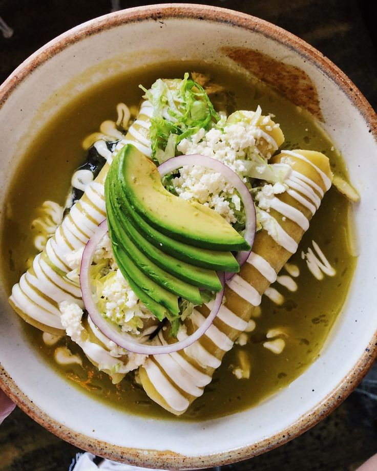

Hierve los tomates verdes y los chiles en agua hasta que cambien de color (unos 7-10 min).
Licua los tomates, chiles, ajo, cebolla y el caldo de pollo hasta obtener una salsa tersa.
Una vez ya lista sofrie la salsa en una cazuela con un poco de aceite, sazona con sal y deja hervir unos 5 minutos.
Para las tortillas ponlas en un sarten con y aceite calien sofrielas rapidamente solo para suavizarlas y asi con las que vayas a preparar.
Luego banalas en la salsa verde caliente para que se impregnen bien.
Por otra parte coloca el pollo deshebrado dentro de cada tortilla bañada.
Y al final enrollala y acomodala en un plato.
Por ultimo Cubre las enchiladas con mas salsa verde por encima y deecora con lechuga, crema y queso fresco a su gusto.

ENCHILADAS
Es una receta tradicional mexicana hecha con tortillas de maiz rellenas de pollo con una capa de salsa verde arriba